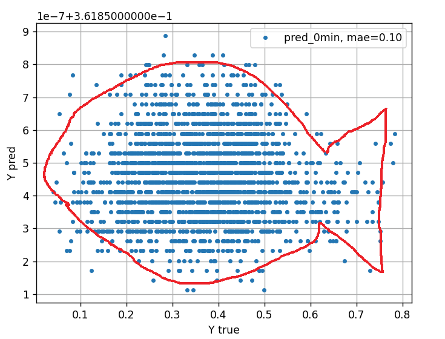
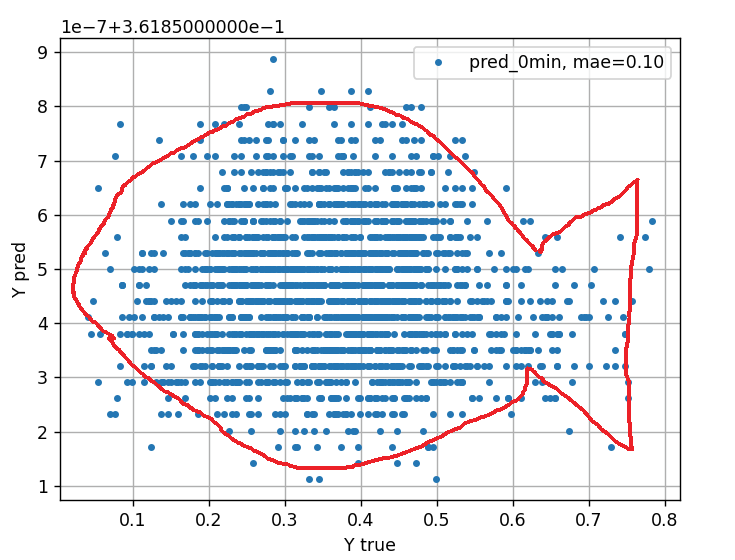

About
Why GlucoPred?
Why is it important?
…
Data
Empatica
About empatica band + signals examples
- BVP
- EDA
- Accelerometer
- Temperature
CGM
About CGM device + signal example
Methods
Features based
Time series based
Results

About empatica band + signals examples
About CGM device + signal example
